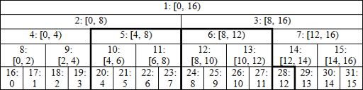
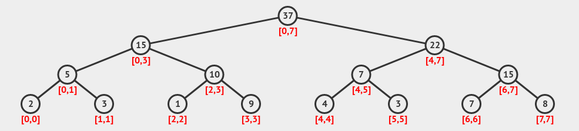

Segment Tree¶
Undoubtedly, one of the most widely used data structures in computer Olympiads is the Segment Tree. Its binary tree type is a Full Binary Tree.
Using this data structure, one can compute the sum of a range in an array and retrieve the maximum or minimum value of an array.
Structure¶
Each node of this tree represents an interval of the queried array. The children of a node (if they exist, there are naturally two) split the parent node's interval in half. In other words, if a node's interval is \([Begin, End)\), the intervals of its left and right children will be \([Begin, Middle)\) and \([Middle, End)\), respectively. Leaf nodes (nodes without children) contain a single element of the array.
To better understand the relationship between nodes and their intervals, refer to the figure below:
{kind=link}

Each node stores specific information about its corresponding interval in the array, which varies depending on the use case of this data structure. For example, if we want to calculate the sum of an interval in the array, each node stores the sum of its corresponding interval.
To better grasp this concept, observe the figure below showing how values are stored in each node:
{kind=link}

The height of this tree is \(\lg n\), and the maximum number of nodes used is \(2n\). Thus, you can store this data structure using \(2n\) memory. It is worth noting that some implementations allocate \(4n\) memory. This is because they assign two children (with no attributes) to each leaf node (single-element nodes), effectively doubling the memory usage.
For node numbering, the root can be assigned index 1. The left and right children of a node \(k\) are then assigned indices \(2k\) and \(2k + 1\), respectively.
Algorithm¶
The way this algorithm is executed for various types of problems solvable with this data structure is nearly identical. We will explain the algorithm using one of the well-known questions associated with this data structure.
Initially, we are given an array. At each step, we are required to either modify the value of an array element or report the sum of a range.
Structure¶
First, we build a Segment Tree from the array. To do this, we first construct the main structure of the Segment Tree. Then we set each node's value equal to the sum of its children's values, and set the values of leaf nodes to their corresponding array elements.
void build(int node, int l, int r) {
if (l == r) {
seg[node] = a[l]; // gereftan meghdare avalie
return;
}
int mid = (l + r) / 2;
build(2 * node, l, mid);
build(2 * node + 1, mid + 1, r);
seg[node] = seg[2 * node] + seg[2 * node + 1]; // jahate be dast avordane majmue ye zir majmue ha
}
void build(int u = 1, int ul = 0, int ur = n){
if(ur - ul < 2){
seg[u] = a[ul];
return;
}
int mid = (ul + ur) / 2;
build(u * 2, ul, mid);
build(u * 2 + 1, mid, ur);
seg[u] = seg[u * 2] + seg[u * 2 + 1];
}
Changing the value of an element¶
We modify the values of all vertices whose intervals contain this element. Note that the number of such intervals is at most equal to the tree's height, as each level of the tree partitions the array. Consequently, at each level, the value of at most one vertex needs to be updated, resulting in an operation order of \(O(lg n)\).
void update(int i, int x, int u = 1, int ul = 0, int ur = n){
seg[u] += x - a[i];
if(ur - ul < 2){
a[i] = x;
return;
}
int mid = (ul + ur)/2;
if(i < mid)
update(i, x, u * 2, ul, mid);
else
update(i, x, u * 2 + 1, mid, ur);
}
Calculating the Sum of a Range in an Array¶
We use a recursive method where at each step, we calculate the sum of the requested range assuming we're at node u. There are three cases for the relationship between the requested range and the node u's interval.
First case: The two intervals are identical, in which case the answer is the value of node u.
Second case: The requested range is entirely within the interval of one of node u's children. Here, we find the answer in the child containing the requested range.
Third case: Part of the requested range lies in the left child's interval and the rest in the right child's interval. In this case, we recursively calculate the sum of the portion in the left child, then the sum in the right child, and add the two results together.
To calculate the sum of the requested range, we start this process from the root node (node 1).
For better understanding, let \(F(u, ul, ur, l, r)\) be the recursive function described above. It returns the answer given the current node, its interval [ul, ur], and the requested range [l, r] (assuming the requested range is within the node's interval). Here, \(sum[u]\) represents the value stored in node u. The three cases can be summarized as:
Time Complexity: This operation is \(O(\log n)\) because at each level of the recursion tree, at most 4 nodes are processed. To prove this, observe that only the leftmost and rightmost nodes at a level may call their children, meaning at most 4 nodes per level are invoked.
int sum(int l, int r, int u = 1, int ul = 0, int ur = n){
if(x >= ur || ul >= y)return 0;
if(x <= ul && ur <= y)return seg[u];
int mid = (ul + ur) / 2;
return sum(l, r, u * 2, ul, mid) + sum(l, r, u * 2 + 1, mid, ur);
}
Delayed Propagation (Lazy Propagation)¶
Suppose in the first operation, instead of changing a single value, we need to modify an interval. For example, we're told to add two units to the interval \(L\) to \(R\). Changing all elements in this interval directly would be cumbersome and increase the number of operations. Using the lazy propagation technique, we can reduce the number of operations. For each node, we maintain an additional value stored in a Lazy array.
We partition the given modification interval into smaller sub-intervals (on the segment tree) using the same method as in the second operation (query operation). We then update the Lazy array values for all these partitioned nodes. Whenever we access a node in the algorithm, we: 1. Add its Lazy value to the node's own value 2. Propagate the Lazy value to its children's Lazy arrays 3. Reset the node's Lazy value to zero
void upd(int u, int ul, int ur, int x){
lazy[u] += x;
seg[u] += (ur - ul) * x;
}
void shift(int u, int ul, int ur){
int mid = (ul + ur) / 2;
upd(u * 2, ul, mid, lazy[u]);
upd(u * 2 + 1, mid, ur, lazy[u]);
lazy[u] = 0;
}
void increase(int l, int r, int x, int u = 1, int ul = 0, int ur = n){
if(l >= ur || ul >= r)return;
if(l <= ul && ur <= r){
upd(u, ul, ur, x);
return;
}
shift(u, ul, ur);
int mid = (ul + ur) / 2;
increase(l, r, x, u * 2, ul, mid);
increase(l, r, x, u * 2 + 1, mid, ur);
seg[u] = seg[u * 2] + seg[u * 2 + 1];
}
int sum(int l, int r, int u = 1, int ul = 0, int ur = n){
if(l >= ur || ul >= r)return 0;
if(l <= ul && ur <= r)return seg[u];
shift(u, ul, ur);
int mid = (ul + ur) / 2;
return sum(l, r, u * 2, ul, mid) + sum(l, r, u * 2 + 1, mid, ur);
}
This book is made by The Shaazzz contributors.
It is publicly available with cc-by-sa license.
Last updated at اوت 27, 2025.
Rendered by Sphinx (4.3.2) and Minoo theme (Beta 0.9.7).